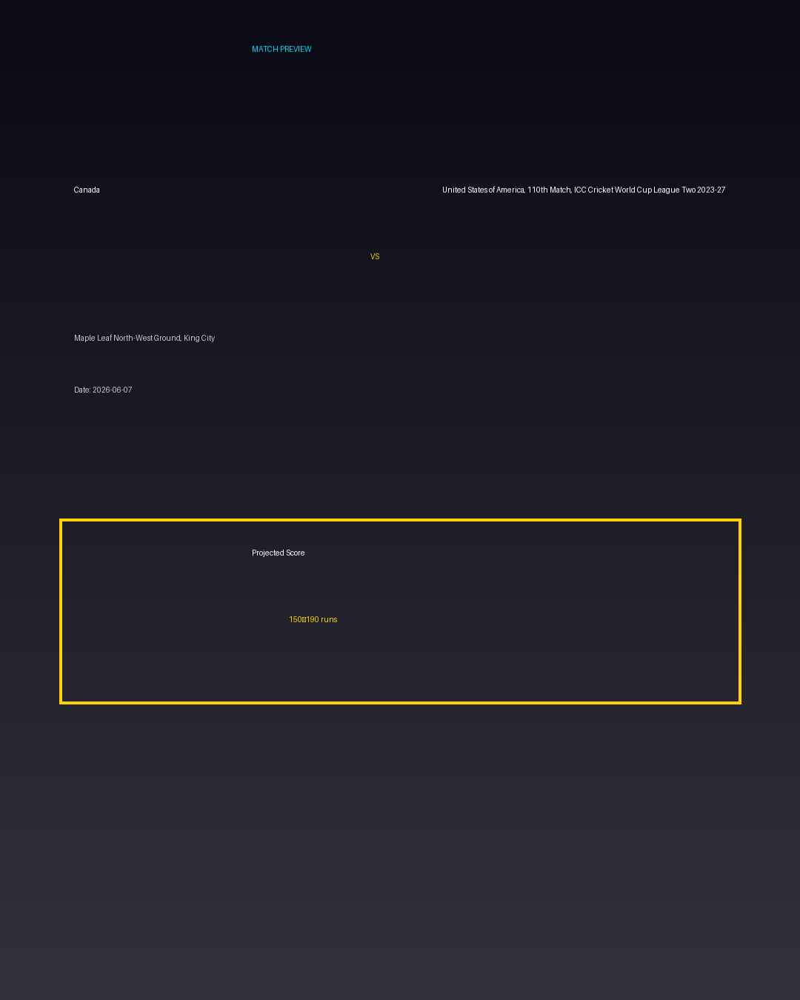

Canada vs United States of America, 110th Match, ICC Cricket World Cup League Two 2023-27
Date: 2026-06-07
Venue: Maple Leaf North-West Ground, King City


Form Guide
Canada: 🟩 🟥 🟩 🟩 🟥
United States of America, 110th Match, ICC Cricket World Cup League Two 2023-27: 🟥 🟩 🟥 🟥 🟩
Pitch Report
Balanced wicket with moderate scoring conditions.
Projected Score
150–190 runs
Key Players
- Canada Key Batter — Batsman
- Canada Strike Bowler — Bowler
- United States of America, 110th Match, ICC Cricket World Cup League Two 2023-27 Key Batter — Batsman
- United States of America, 110th Match, ICC Cricket World Cup League Two 2023-27 Strike Bowler — Bowler
Advanced Win Probability
Canada: 64.3%
United States of America, 110th Match, ICC Cricket World Cup League Two 2023-27: 35.7%
AI Match Prediction
Based on venue conditions, a projected scoring range of 150–190 runs, recent form (with Canada appearing slightly stronger), and the pitch profile ('Balanced wicket with moderate scoring conditions.'), this matchup appears to present Canada entering as clear favorites. Early momentum and top-order execution will likely determine the winner.
